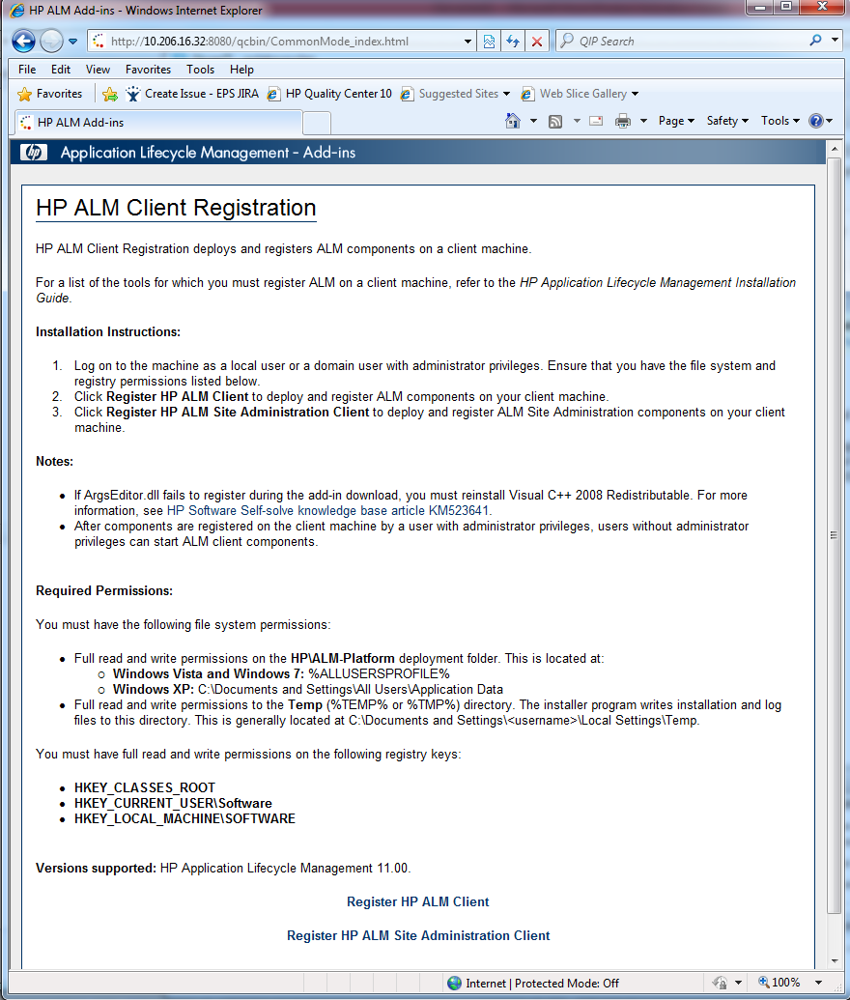

Software required :
- MS Office Excel should be installed
- HP adding should be installed : Register HP ALM Client, Register HP ALM Site Administration Client
Adding could be downloaded from Yous HP Quality Center server :
http://[QC ADDRESS]/qcbin/CommonMode_index.html
